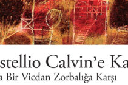
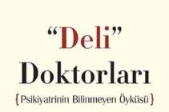
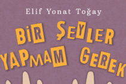

Stefan Zweig ‘ın önemli eserlerinden biri daha: “Castellio Calvin’e Karşı”
Mustafa Topal ve Kıvanç Koçak’ın Türkçeleştirdiği Stefan Zweig’in Castellio Clavin’e Karşı devamını oku>>

Tıbbın üvey evlatları: “Deli Doktorları” | Caner Almaz
Bundan birkaç yüzyıl evvel, ciddi akıl rahatsızlıkları olduğu kanısına varılmış kişiler, ailelerinin maddi durumu devamını oku>>

Sıradan durumlara sıra dışı çözümler bulan çocukların hikayeleri
Ödüllü yazar Elif Yonat Toğay, ilk çocuk kitabı Bir Şeyler Yapmam Gerek kitabı Tudem Yayınları tarafından devamını oku>>
Alper Atalan’a 6 soru | Can Öktemer
Hazırlayan: Can Öktemer En son okuduğunuz kitabın adı nedir? İzlenimlerinizi öğrenebilir miyiz? En son Ahmet Büke’nin devamını oku>>